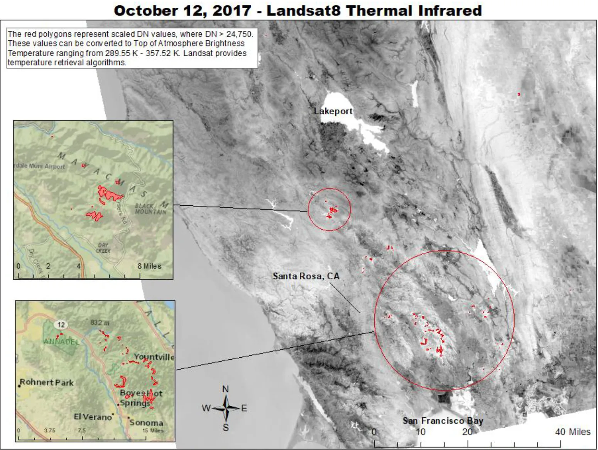
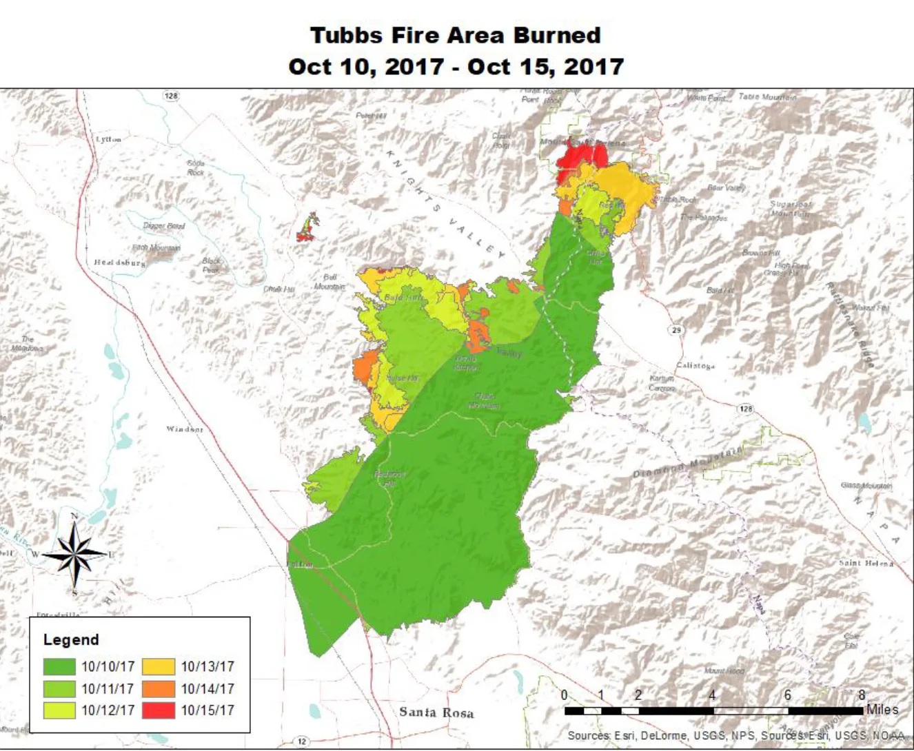
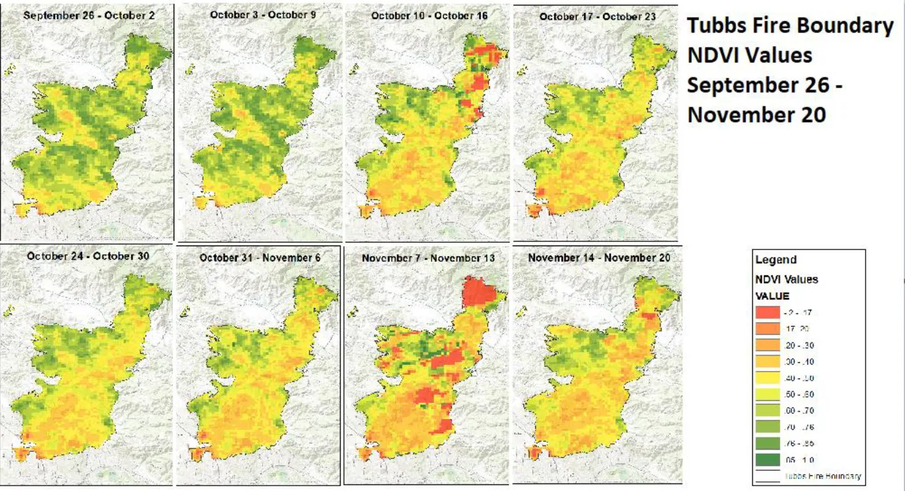
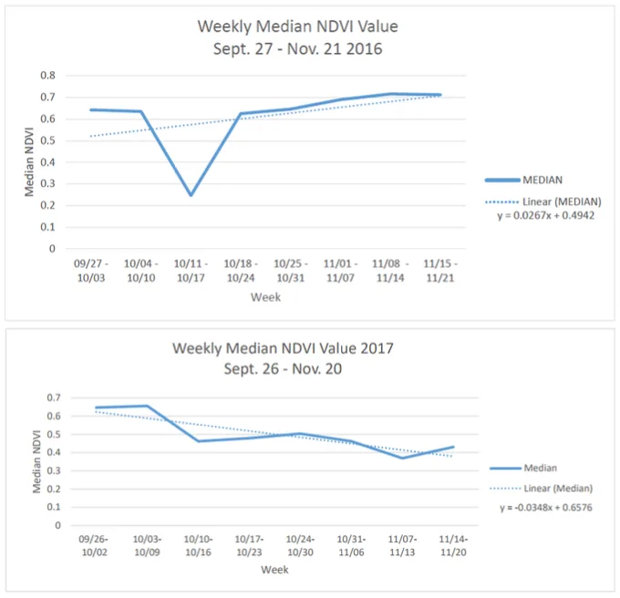
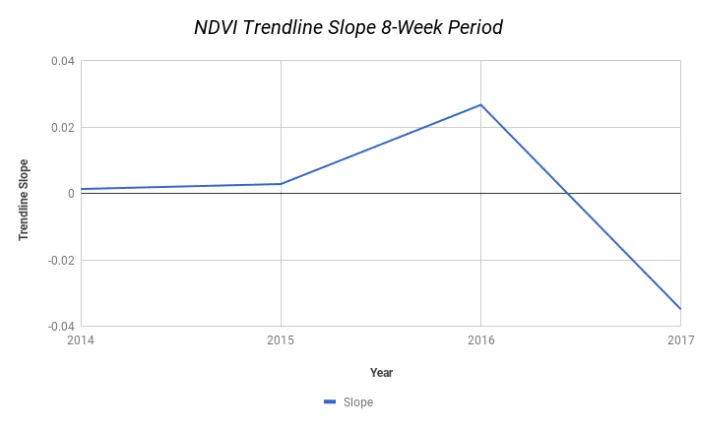
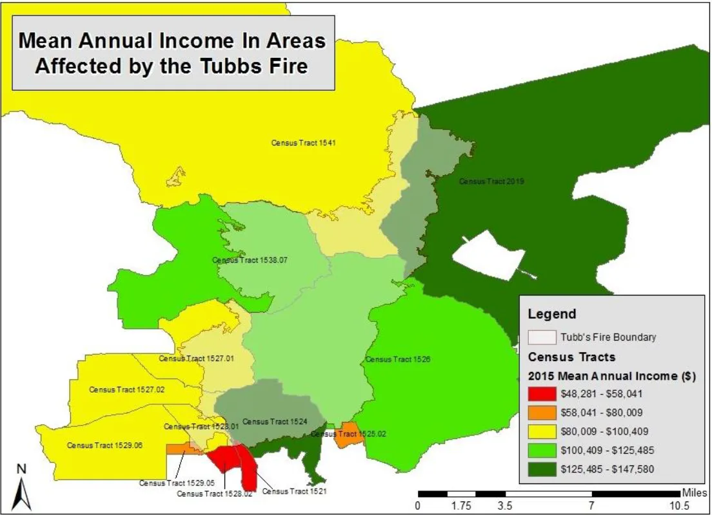
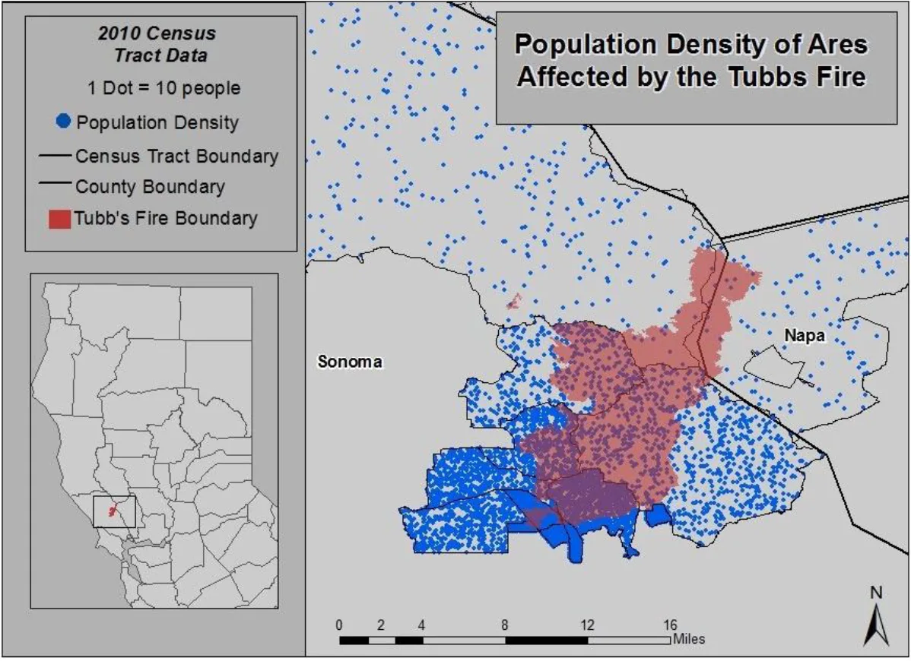

UCLA coursework, 2014 to 2018
California's Most Destructive Wildfire: Mapping The Tubbs Fire (2017)
Abstract:
Using remotely sensed images for at-risk areas - like those entrenched in wildfires - is essential for monitoring vegetation indices and mitigating the fire's destructive spread. This project examines the Tubbs Wildfire that devastated Sonoma County, CA in October of 2017. Three objectives were set for the parameters of this project's success: measuring active and burnt area extent using thermal imagery, comparing NDVI fluctuations for vegetation health with fire activity, and illustrating post-fire social and structural implications for Sonoma County. This presentation was culminated in tandem with the following peers from the University of California, Los Angeles: Shannon Cavanaugh, Austin Gates, Mikayla Hart, Jaclyn Villars Klaus, and Madeline Jordan.
Introduction:
California's Meditterranean climate makes it susceptible to "fire seasons" - large quantities of rainfall are collected in the winter, followed by a hot and dry summer that essentially leaves blooming vegetation left to dry out and become fuel for fires. In addition to drying vegetation, wind systems such as the Diablo and Santa Ana winds circulate through Northern and Southern California. The Diablo winds in Northern California bring hot, dry air that originate offshore due to high pressure over the land and low pressure over the ocean. The Santa Ana's in Southern California bring similar hot, dry winds that stem from high pressures inland. The prevalence of these wind circulations is felt strongest during the months of September through December - now denoted as California's "fire season."
One of the most damaging fires in California was the Tubbs Fire (2017). The fire started on October 8th and quickly spread throughout Sonoma County and Napa County, burning a total of 36,807 acres until its full containment on October 31st. To accurately assess the breadth of the Tubb's Fire, critical hotspots were georeferenced and thermal anomalies were detected using Landsat8's thermal infrared band 10. This is an effective method in mapping a fire's intensity and burn severity, because the thermal emissivity of an active fire is greater than that of its surroundings.
The Normalized Difference Vegetation Index (NDVI) is widely used to detect and measure the extent of wildfires by using the photosynthetic activity of vegetation as an indicator of a fire's emersion. NDVI uses the Near Infrared and Red spectral bands to measure healthy vegetation based on the principle that photosynthetic organisms absorb most Red light and reflect most Near Infrared light. NDVI values in burned areas were found to be significantly lower than unburned areas. In this study, MODIS sensors were used to compare the change in NDVI during the Tubbs Fire with average annual values from the same region.
It is expected that the thermal bands will provide an accurate active fire extent and allow sensors to identify critical areas of the fire, as the extreme temperature of fire should provide a radiant flux easily distinguishable from the surrounding landscape. It is also expected that lower NDVI values represent lower vegetation production as burned vegetation will no longer reflect Near Infrared light or absorb Red light to the comparison of healthy vegetation. It is anticipated that the recovery effort will be difficult and slow in the Santa Rosa region, due to the sheer number of structures destroyed (5,100).
Methods:
Before explaining the process in its entirety, it's imperative to first understand the basics of thermal remote sensing. Every object on Earth with an internal temperature greater than absolute zero emits unique thermal infrared energy, known as Radiant Flux. Thermal infrared energy extends from 3-14μm on the spectral scale. Unfortunately, we are not able to utilize this full range; atmospheric interference is a limited factor. H20, CO2, and O3 form absorption bands that preoccupy a significant amount of thermal infrared radiation between 3-14μm. This creates atmospheric windows in the electromagnetic spectrum for sensors. The Earth’s ozone layer absorbs much of the thermal energy exiting the terrain in an absorption band from approximately 9 - 10μm. This leaves the window from 10.5 - 12.5μm to avoid the absorption band. We will utilize Landsat8's Band 10 which occurs from 10.6 - 11.19μm.
In terms of cost and resolution, the best imagery accessible was Landsat 8 OLI/TIRS C1 Level-1. This sensor provides 11 bands at 30m spatial resolution, capturing the entirety of Earth every 16 days. The sensor follows a near polar orbit, capturing 400 scenes per day and completing over 14 orbits. This both reduces the risk of cloud interference and creates the possibility of scene overlap for analysis purposes. Landsat 8 thermal infrared is acquired at 100m resolution and resampled to 30m resolution. Although Landsat 8 provides two thermal bands, Bands 10 and 11, users should refrain from relying on Band 11 data for quantitative analysis. Band 11 adheres to larger calibration uncertainty, contaminated by stray light from outside the field of view. Using Glovis, a product by USGS, this study was able to come to fruition through the comparison of two scenes captured on October 11, 2017 and October 12, 2017.
Temperature threshold were created by comparing the Digital Number (DN) pixel values in the area we knew the Tubbs Fire scorched with DN pixel values of the surrounding, unscathed area. To isolate active fire pixels from the rest of the scene, the threshold of DN values set for October 11th was 31,750 and the threshold of DN values set for October 12th was 24,750. These values were converted to represent a range approximating 290K-360K using the Temperature Retrieval Algorithm provided by the Landsat website. This range represents "Top of Atmosphere (TOA) Brightness Temperature," not Land Surface Temperature. Converting TOA Brightness Temperature to Land Surface Temperature is possible, but often provides inaccurate estimation due to water vapor interference and emissivity.
Once the thresholds for both scenes were finalized, the images obtained on October 11, 2017 and October 12, 2017 were imported into Arcmap. The images were reclassified, and a new raster was created with all pixel values under the threshold parameters ascribed 'null.' Polygons representing DN values greater than the thresholds were produced using a raster-to-vector conversion. These polygons, labeled 'Thermal Anomalies,' were then overlaid on both original thermal images.
In order to assess the impact the Tubbs Fire had on vegetation, our study needed a large range of NDVI values during and after the fire with the norms for the same time span in previous years. The product eMODIS V6 NDVI was selected to perform calculations and evaluate the annual comparison. The MODIS vegetation indices were calculated based on 16-day intervals of daily assessments with Red and Near Infrared Bands. They were also corrected for Bidirectional Reflectance Distribution Function (BRDF). Imagery was downloaded in 1-week intervals from USGS during the timeframe of September 26th through November 20th. The 8 images produced from this timeline were clipped with the shapefile of the Tubbs Fire's extent. Zonal Statistics were calculated to acquire the median, mean, minimum, and maximum NDVI values for each week. The median values were used as the point of reference, determining the change each week. A choropleth map was chosen to visually represent the Tubbs Fire's effect on vegetation over time.
To confirm the correlation between decreasing NDVI values with an increasing Tubbs Fire extent (and not just normalcy of decreasing vegetation for this time of year), median NDVI values for the same 8-week period were calculated for the year prior (2016) using the same process. Line charts comparing the 'Weekly Median NDVI Value' for September 26 - November 20 were created to compare the change in NDVI before the Tubbs Fire (2016) and during the Tubbs Fire (2017). To further cement this correlation, this process was done for the same weeks for the years 2014 and 2015. A declining slope of the trendline illustrates a decrease in NDVI, while a positive slope denotes an increase in NDVI.
In order to gauge recovery efforts of the Tubbs Fire, demographic maps were produced to showcase the rapid movement of the fire from the less populated wine country of Napa County to the densely populated, urbanized region of Sonoma County. The two demographics of interest for the study were population and income. The Tubbs Fire polygon was layered with demographic data provided from the 2010 US Census.
Results:
Landsat Thermal Imagery - October 11th 2017

The 'Thermal Anomalies' in the map above represent DN pixels greater than the threshold set for the image captured on October 11, 2017 (31,750). The TOA Brightness Temperature equivalent to this threshold ranges from 306.25K - 367.12K.
Landsat Thermal Imagery - October 12th 2017

The 'Thermal Anomalies' in the map above represent DN pixels greater than the threshold set for the image captured on October 12, 2017 (24,750). The TOA Brightness Temperature equivalent to this threshold ranges from 289.55K - 357.52K.
Total Area Burned

The map above represents the burned area of the Tubbs Fire's extent at its apex - October 10th through October 15th. Shapefiles of the boundaries were provided from a Cal Fire Server. The polygons were then separated by date to illustrate a 5-day choropleth map.
NDVI Analysis - Tubbs Fire Boundary

The composite of 8 maps above illustrate a side-by-side comparison of the weekly change in NDVI values for the Tubbs Fire's extent between September 26, 2017 and November 20, 2017.

In 2016, a year before the Tubbs fire occurred, the extent showcased a slight increase in vegetation health (NDVI values). This increase in vegetation health is heavily juxtaposed by the following year’s (2017) indices. As expected, the fire catalyzed an ongoing regression of vegetation health (characterized by the prominent downward trend in NDVI values).

To add another facet of understanding to our analysis, a calculation of vegetation health in the years 2014 and 2015 was further examined. This analysis served as a safety precaution of sorts: if the vegetation health of the extent (multiple years prior to the Tubbs fire’s outbreak) showed an apparent decrease, there had to be other outside factors influencing these oscillations. However, these prior years followed the same trajectory of 2016 — an overall increase in vegetation health. Ergo, the clear decrease in NDVI values in the year 2017 was an outcome of the Tubbs fire’s devastation.
Income Analysis

This illustration represents the Mean Annual Income of areas impacted by the Tubbs Fire. An income analysis helps aide the recovery efforts placed in order after the Tubbs Fire was fully contained. The burned area in the figure above indicates a considerably financially stable representation of people affected. Only two of thirteen census tracts were represented as 'Red' with a mean annual income lower than $58,000. The national mean average income is approximately $51,939 so the two tracts within the lowest income range exceeds that of the national average. Five of thirteen census tracts denote incomes greater than $100,000 - which only 20% of the American population makes. Understanding the wealth in the affected area helps assume higher rates of recovery; most people within this income ranges can afford home insurance and other amenities that will likely make recovery easier. If the Tubbs Fire had occurred in an area with substantially lower annual income averages, it is probable that longer rates of recovery and rebuilding would occur.
Population Density Analysis

The map above illustrates the Tubbs Fire's spread from a less populated region (Napa County) to a more clustered population in Sonoma County. This emphasizes the amount of people affected by the Tubbs Fire's destruction, and the reason it was coined 'California's Most Destructive Wildfire' in 2017.
Discussion:
After reviewing the data, it was unanimous that while Landsat 8 certainly allows for the identification of thermal anomalies such as wildfires, perhaps an AVIRIS-like hyperspectral sensor would have been more accommodating for this analysis. There are many limitations to remotely sensing wildfires thermally - including spatial, temporal, and spectral resolutions, as well as interference from scattering and emissivity. It is important to remember that Landsat 8 TIRS bands are acquired at 100m resolution but are then resampled to 30m. While the spatial resolution provides a mean area of estimation, the precision of the active fire area is jeopardized by the resampled area - which could provide misconstrued data for fire crews in their attempt to mitigate the Tubbs Fire. Temporally, one or two scenes every 16 days will not allow daily mapping of the active fire regions. And spectrally, the small atmospheric windows sensing thermal infrared energy are limiting.
Touched upon above, interference and scattering also affect sensors outside Earth’s atmosphere. In addition to the atmospheric windows an orbital sensor must work within, the amount of smoke produced by fires hinder a thermal sensor's ability to accurately sense an active fire's area. Due to the large diameter of smoke particles, Mie Scattering occurs - when the diameters of atmospheric particles are so similar to the wavelength of scattering light that the thermal infrared wavelengths do not reach the sensors. Cloud cover can also alter data, as water vapor non selectively scatters all wavelengths and limits the sensor's ability to collect data. There may also be light contamination in the thermal infrared bands.
Regardless if a hyperspectral sensor like AVIRIS was equipped to a geostationary satellite with finer spatial resolution (10m-20m), there will always be a variable impeding thermal measurements. Interference and scattering from clouds, smoke, and atmospheric gas will always be considered when performing calculations and analyses.